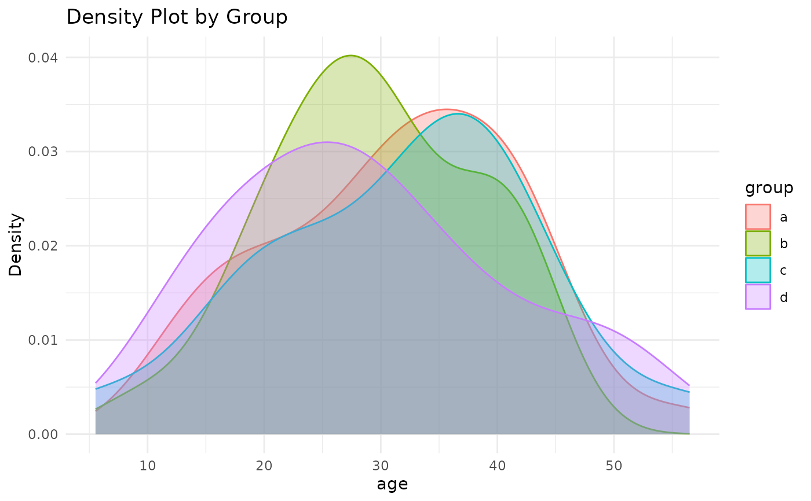
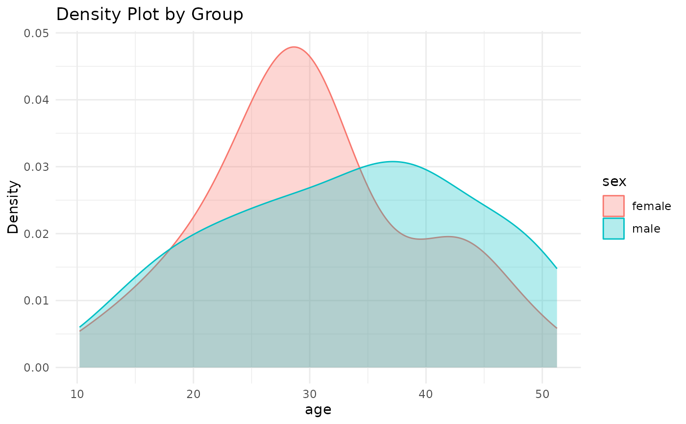

Summarises the median, interquartile range, mean, standard deviation, confidence intervals of the mean and produces a density plot, stratified by a second grouping variable.
Provides frequentist hypothesis tests for comparison between groups: T test and Wilcoxon rank sum for 2 groups, Anova and Kruskall wallis test for 3 or more groups.
The function accepts an input from a dplyr pipe "%>%" and outputs the results as a tibble.
Value
A tibble with a summary of the variable frequency (n), number of missing observations (n_miss), median, interquartile range, mean, SD, 95% confidence intervals of the mean (using the Z distribution), and density plots.
Shows the T test (p_ttest) and Wilcoxon rank sum (p_wilcox) hypothesis tests when there are two groups And an Anova test (p_anova) and Kruskal-Wallis test (p_kruskal) when there are three or more groups.
Examples
example_data <- dplyr::tibble(id = 1:100, age = rnorm(100, mean = 30, sd = 10),
group = sample(c("a", "b", "c", "d"),
size = 100, replace = TRUE))
dist_sum(example_data, age, group)

#> # A tibble: 4 × 14
#> group n n_miss median p25 p75 mean sd min max ci_lower
#> <chr> <int> <int> <dbl> <dbl> <dbl> <dbl> <dbl> <dbl> <dbl> <dbl>
#> 1 a 33 0 32.6 23.6 39.6 31.4 10.6 12.1 55.6 27.8
#> 2 b 25 0 29.2 23.7 37.1 29.3 8.90 9.36 43.2 25.9
#> 3 c 20 0 33.8 23.7 38.4 31.7 11.9 5.53 56.5 26.4
#> 4 d 22 0 26.9 20.3 36.4 28.8 11.9 11.0 52.1 23.8
#> # ℹ 3 more variables: ci_upper <dbl>, p_anova <dbl>, p_kruskal <dbl>
example_data <- dplyr::tibble(id = 1:100, age = rnorm(100, mean = 30, sd = 10),
sex = sample(c("male", "female"),
size = 100, replace = TRUE))
dist_sum(example_data, age, sex)

#> # A tibble: 2 × 14
#> sex n n_miss median p25 p75 mean sd min max ci_lower
#> <chr> <int> <int> <dbl> <dbl> <dbl> <dbl> <dbl> <dbl> <dbl> <dbl>
#> 1 female 54 0 29.0 24.5 35.9 30.3 9.30 10.2 51.3 27.8
#> 2 male 46 0 34.0 25.9 40.9 33.4 10.9 11.8 50.9 30.3
#> # ℹ 3 more variables: ci_upper <dbl>, p_ttest <dbl>, p_wilcox <dbl>
summary <- dist_sum(example_data, age, sex) # Save summary statistics as a tibble.